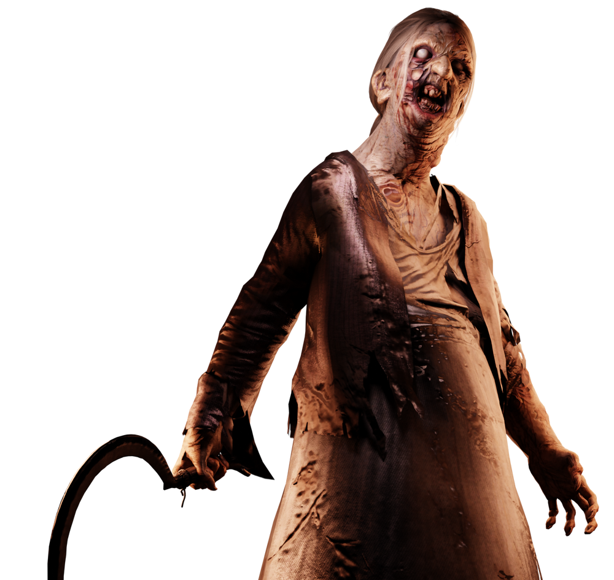
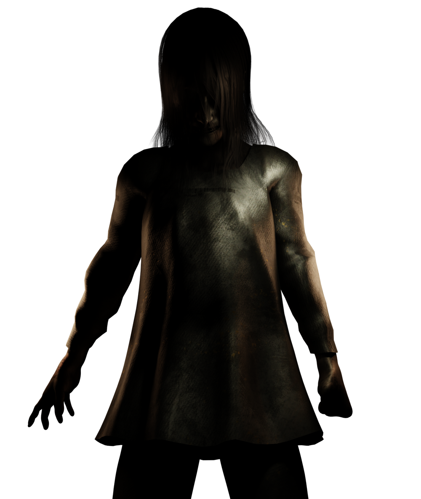
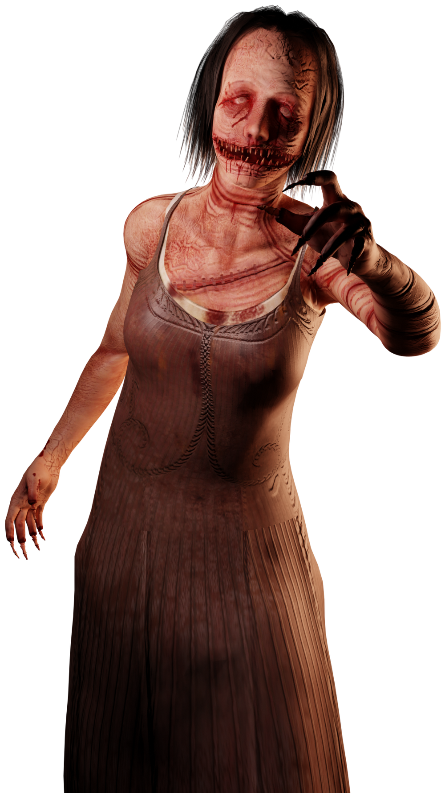
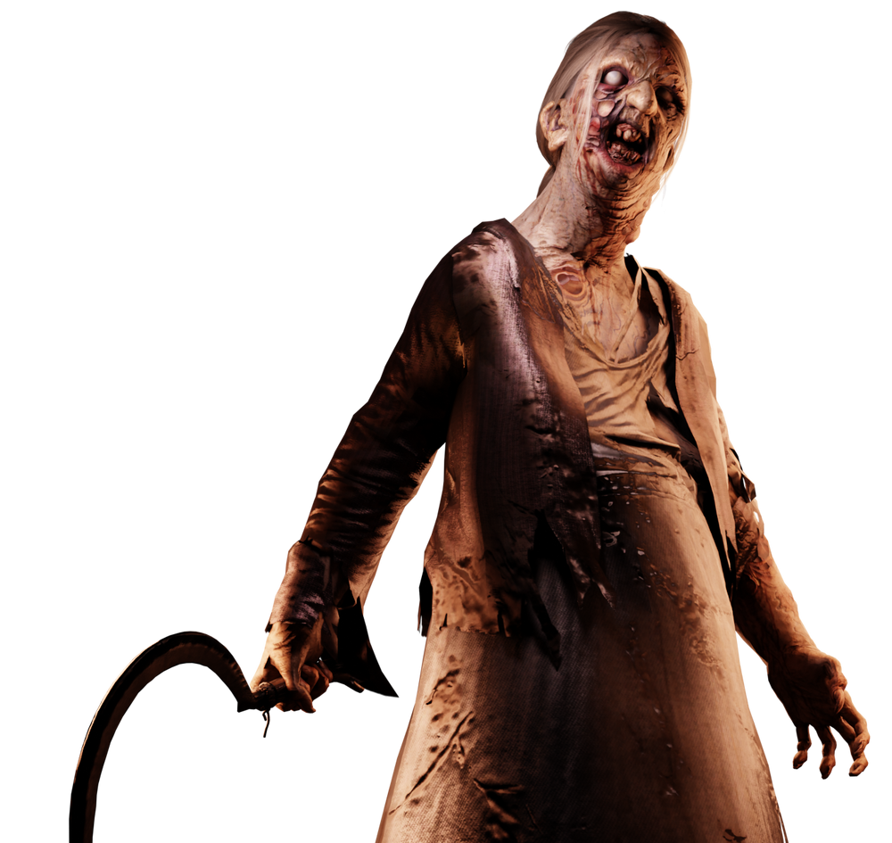
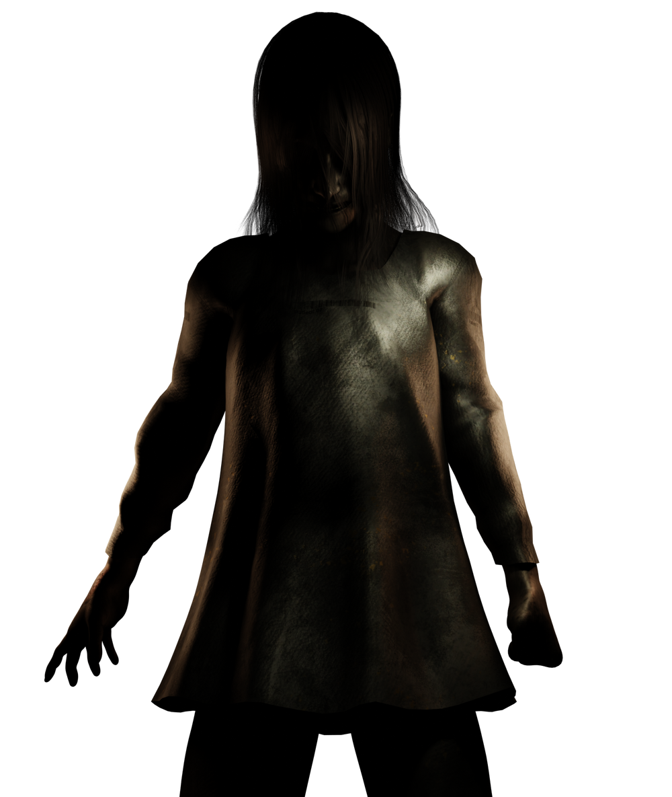
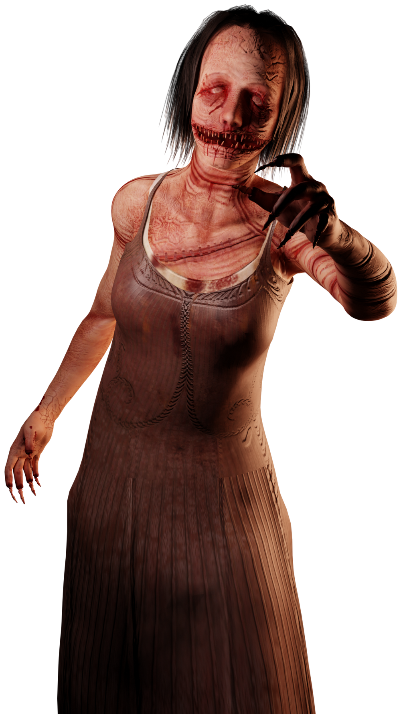

Сделано

0:00.0
Фото: 0
Комбо: 0
Сделано
Утилита, имитирующая мерцания призраков в игре Фазмафобия и дающая возможность научиться фотографировать призрака.
В настройках выбрать модель и тип мерцаний, после чего нажать кнопку старт.
Засчитывает только когда видно призрака. Убедитесь, что вы не нажимаете на клавишу рестарт.
Да, выбрать custom и вставить ссылку из интернета (можно загрузить, например, в Дискорд и скопировать ссылку).
 




